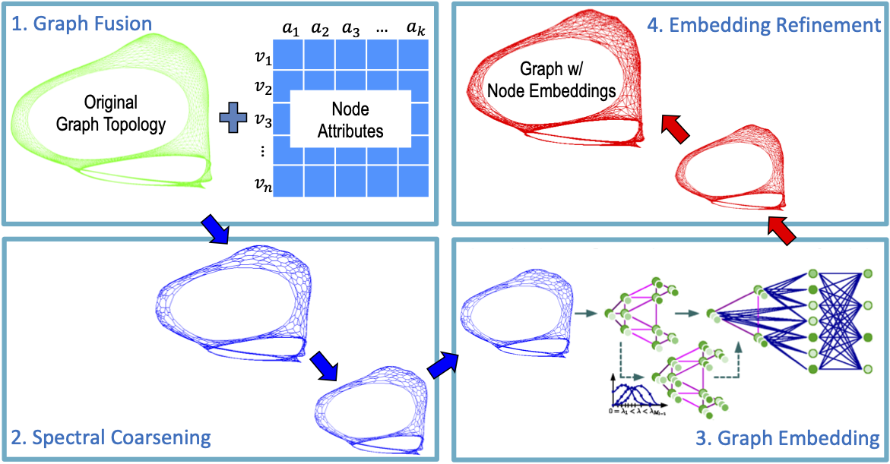
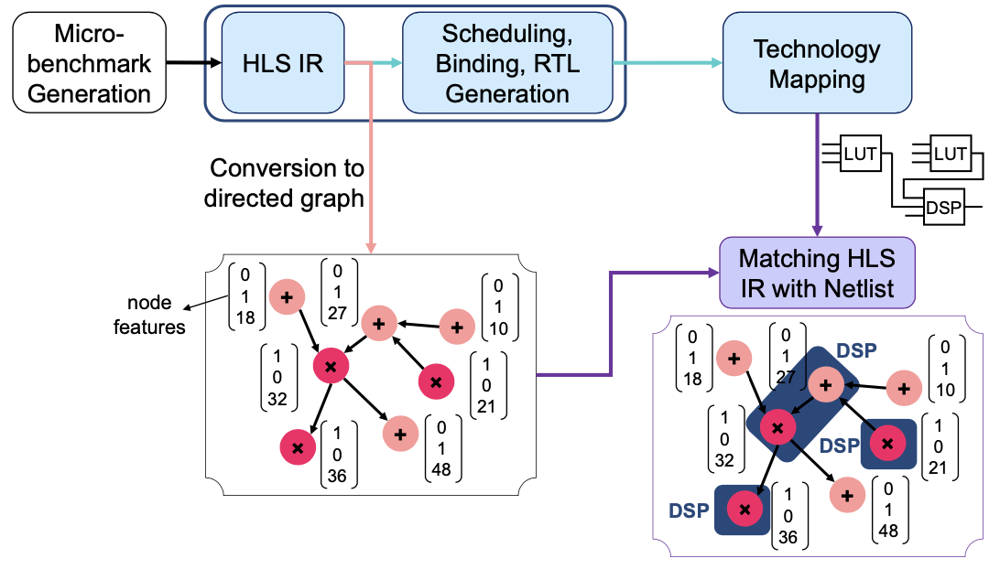
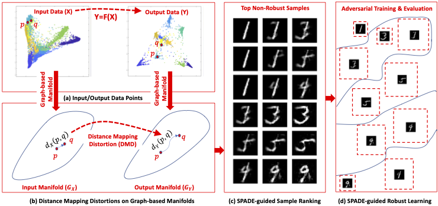
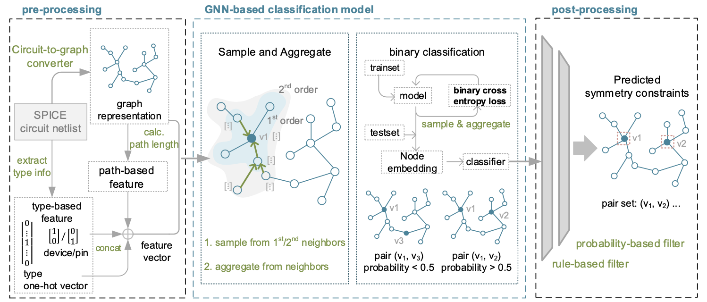
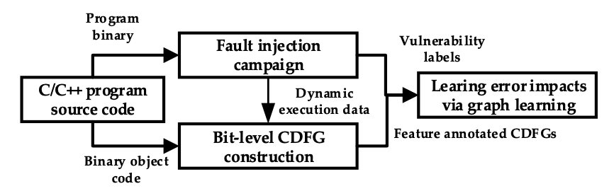

Chenhui Deng
I am a fifth year Ph.D. candidate in Electrical and Computer Engineering department at Cornell University. Moreover, I am a member of Computer Systems Laboratory (CSL) and supervised by Prof. Zhiru Zhang. My research interests include graph learning and its applications in electronic design automation (EDA) field.
Email cd574@cornell.edu
Office Rhodes Hall 471D, Ithaca, NY, 14853
Resume CV
News
|
2022-08 I'm thrilled to share that I have won the prestigious and highly competitive 2022 Qualcomm Innovation Fellowship! There are only 19 teams winning the award out of 100+ teams in North America this year. |
Publications
|  |
GraphZoom: A Multi-Level Spectral Approach for Accurate and Scalable Graph Embedding (Oral Paper, Acceptance Rate: 1.8%)
International Conference on Learning Representations (ICLR),
2020
|
|  |
Accurate Operation Delay Prediction for FPGA HLS Using Graph Neural Networks (*Co-first Authors)
IEEE/ACM International Conference on Computer-Aided Design (ICCAD),
2020
|
|  |
SPADE: A Spectral Method for Black-Box Adversarial Robustness Evaluation (*Co-first Authors)
International Conference on Machine Learning (ICML),
2021
|
 |
GARNET: Reduced-Rank Topology Learning for Robust and Scalable Graph Neural Networks
In submission to Learning on Graphs Conference (LoG),
2022
|
|  |
Layout Symmetry Annotation for Analog Circuits with Graph Neural Networks
IEEE/ACM Asia and South Pacific Design Automation Conference (ASPDAC),
2021
|
|  |
GLAIVE: Graph Learning Assisted Instruction Vulnerability Estimation
IEEE/ACM Design Automation and Test in Europe (DATE),
2021
|